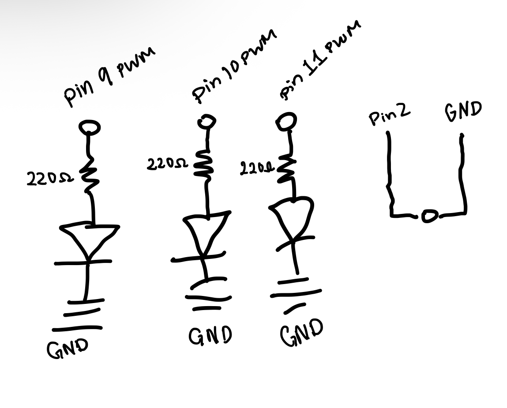

Firmware
Here are three snippets of my code:


HCDE 439 · Physical Computing · Selome Girma

As an employee at a toy company, I propose a "control traffic" game. This game includes pressing a black button that changes the colors green, yellow, and red. At each push, the color changes from green to yellow to red. Once the button is pressed, the color fades in brightness. This is also meant to act as a timer for the cars.
I have 3 LEDs: green, yellow, and red. Each represents a traffic light. There is a 220-ohm resistor on each of them. Each color also connects to pins ~9, ~10, and ~11. I used these pins because they support PWM, which allows us to control how bright each color is.
GND is connected to the 0V supply. The green, yellow, and red LEDs connect to GND through that supply.
Here are three snippets of my code:
This video shows how my "control traffic" toy works. It demonstrates how the button changes the traffic light colors and controls their brightness.
Draw a chart where the X axis is time and the Y axis is voltage. Draw 3 lines representing the voltage across an LED with analogWrite(led, 64), analogWrite(led, 128), and analogWrite(led, 255).

If all your LEDs were on simultaneously, what would the total current draw be? Is this above or below the total Arduino current draw limits? If all your LEDs were on, how long would your circuit run if powered by a 1200 mAh battery?
Simultaneously, it would be: I LED = 4 × 20 mA = 80 mA.
Each LED draws 20 mA, which is within the commonly recommended operating current per Arduino Uno I/O pin.
The four LEDs draw 80 mA combined, which is below the ATmega328P's 200 mA absolute maximum for the microcontroller's supply pins.
The Arduino itself also consumes current, so its total draw will be higher than 80 mA.
Measure and record the actual voltage across one of your LEDs when it is on. How does this compare to the theoretical forward voltage for your LED color?
I measured approximately 2.0 volts across my red LED when it was on. The theoretical forward voltage for a red LED is typically around 1.8–2.2 volts. My reading falls within this range, so it is consistent with what I would expect from a red LED.
Did you use AI tools in completing this assignment? If yes, provide details on how and when, as well as a brief reflection.
I used AI to help me debug my Arduino code during this assignment. It helped me understand errors in my code and figure out how to fix them. I also used it to better understand how the different components worked together. Overall, AI was a helpful tool for troubleshooting, but I still had to test my circuit and make sure everything worked as expected.